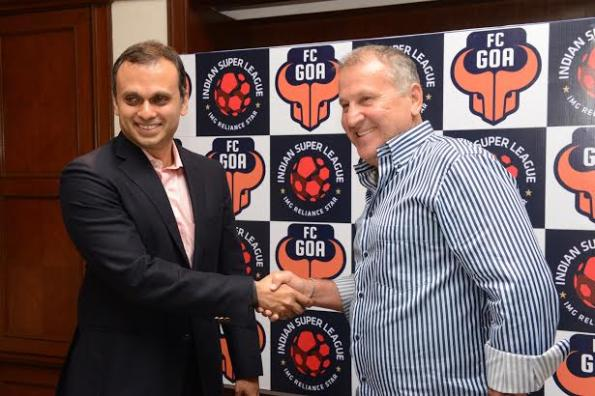

Arthur Antunes Coimbra or better known as Zico is the manager and chief coach of FC Goa. The Brazilian legend interacted with the media on Tuesday. Here are the excerpts.
Opening note: It feels fantastic to be in India. I hope to contribute significantly to football not only in Goa but India as a whole. There is a huge responsibility placed on my shoulders and I will do justice to it. I know expectations are high. I am motivated to take on this role of coach to FC Goa. We cannot work in isolation but have to do so as a team. We have to work together to raise the standards of football in the country. I plan to take the team and football to the highest level and will do my best. Thank you for a wonderful welcome to India.
ISL is a big league. I sincerely hope that the quality of football will rise with the Indian Super League and it will benefit football as a whole. For success, we have to work very hard. I have done so in my country and will do the same in India. I will offer my experience and knowledge to better the sport of football in the country. Asian football is getting stronger. I am not here to be a mere passenger, I am here to be a part of the development of football in the country.
India is a very large country but it is very unfortunate that the standard of football is not too high. I came to Kolkata in 2004 for the world cup preliminaries and saw stadia full of people enthusiastically cheering and enjoying the game. If there is so much love for the game then there should be something done to raise its standard. I hope that football scales greater heights with the help of the federation and the government.
My objective is clear. The objective is to reach the finals and win. I am optimistic about this. We have to prepare well though. I want to get to know each and every one of the players well as soon as possible and I will share my philosophy of the game with the team.
Each country is different from the other. In Japan there was no professionalism at all. But the biggest advantage I had was that everyone in the Japanese team was united and wanted to progress from amateur football to professional football. In Turkey, they’ve been concentrating on the internal football league only. I tried to change their mentality and encouraged them to venture beyond their comfort zone and look towards the international arena. That is how they took the initiative to play in Europe and other parts of the world. Youngsters in Qatar were not interested in football at all. I had to build that drive inside them for them to take the game seriously. Sometimes bringing big players to the table doesn’t help if the players don’t have the urge to change their mentality. But I managed to do that in Qatar. If India would like to grow, it depends on the Indian football players’ mentality. We can provide help through our rich experience but the ability to grow lies solely in you. I am here to extend my help for the growth of football whether the player is amateur or a professional.
Washington senior Hau’oli Kikaha has been named the Lott IMPACT player of the week after recording three sacks and a fumble in the Huskies’ 44-19 victory over Illinois.
The Lott awarded is named in honor of Pro Football Hall of Famer Ronnie Lott, and it recognizes defensive players for performance and character. As part of the weekly award, Pacific Club IMPACT Foundation will make $1,000 donation to UW’s general scholarship fund.
Kikaha is second in the Pac-12 this season with five sacks, trailing teammate Danny Shelton, who has six sacks. Kikaha’s 22 career sacks are sixth all-time at UW.
Kikaha is the second UW player honored as a national player of the week this week. Shaq Thompson earned similar honors from the Walter Camp Foundation and Athlon (in addition to being named Pac-12 player of the week).